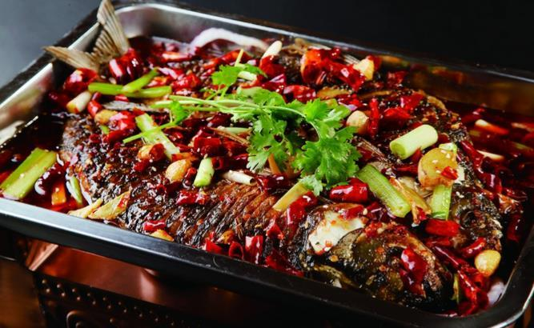
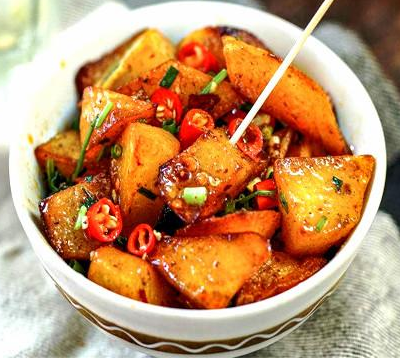
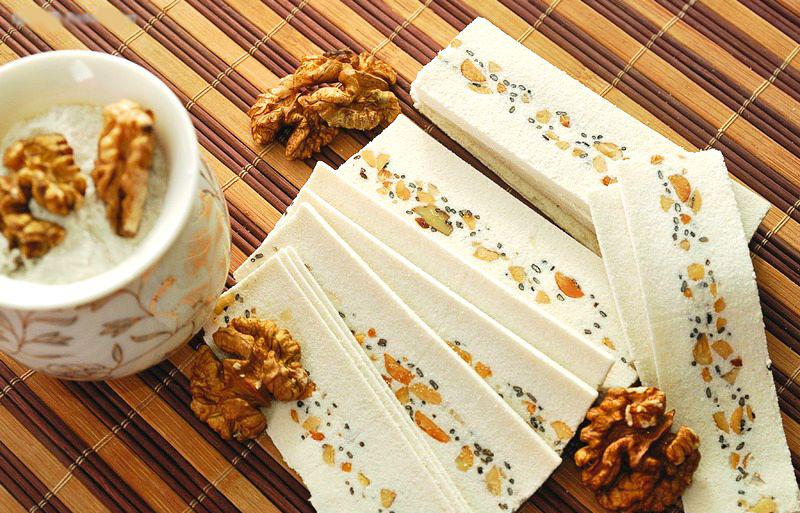

重庆主食
重庆小吃
重庆特产

-
火锅
想到火辣的重庆肯定会想起麻辣的火锅，在重庆火锅就是yyds。不论是冬天还是炎夏，火锅店永远营业，也从不缺顾客。
-
麻辣香锅
麻辣香锅以麻、辣、鲜、香、油、混搭为特点，口味多样化，多种食材可任意搭配。推荐土豆，藕片，苕皮，千叶豆腐，绝不踩雷。
-
万州烤鱼
将鱼剖洗净后平放在铁夹中，放在炉上用木炭烧烤，盛到专用铁盘中，浇上用牛油、红油、白糖、花椒、辣椒等调味品炒出底料，放上西芹、豆芽等爽口菜。口味咸辣。

-
重庆小面
佐料是重庆小面的灵魂，一碗面条全凭调料提味儿。先调好调料，再放入煮好的面条。麻辣味调和不刺激，面条劲道顺滑，汤料香气扑鼻，味道浓厚。
-
酸辣粉
“重庆酸辣粉”是纯天然绿色食品，由于重庆的酸辣粉口味独特、酸辣开胃，长期以来一直深受重庆人的喜爱，其特点是“麻、辣、鲜、香、酸且油而不腻”。素有“天下第一粉”之美名。
-
锅巴洋芋
街边的小摊上飘来的香味肯定有属于锅巴洋芋的一份，土豆皮炸至酥黄，配上软糯糯的口感，加上辣椒粉必是味蕾的享受。

-
涪陵榨菜
以涪陵青菜头为原料，涪陵青菜头呈近圆形、扁圆球形或仿锤形，表皮青绿，肉质白而肥厚，质地嫩脆，远近闻名。
-
磁器口麻花
原味麻花，香甜可口，入口即化，老少皆宜。椒盐麻花，口味纯正，酥脆化渣。麻辣麻花，重庆口味，集甜、麻、辣于一体，回味无穷。
-
合川桃片
用上等糯米、核桃仁、白砂糖、蜜玫瑰等原料，精制加工而成。粉质细润，绵软，片薄，色洁白，味香甜，突出浓郁的桃仁，玫瑰香味，切面光整，厚薄均匀，长方形片状